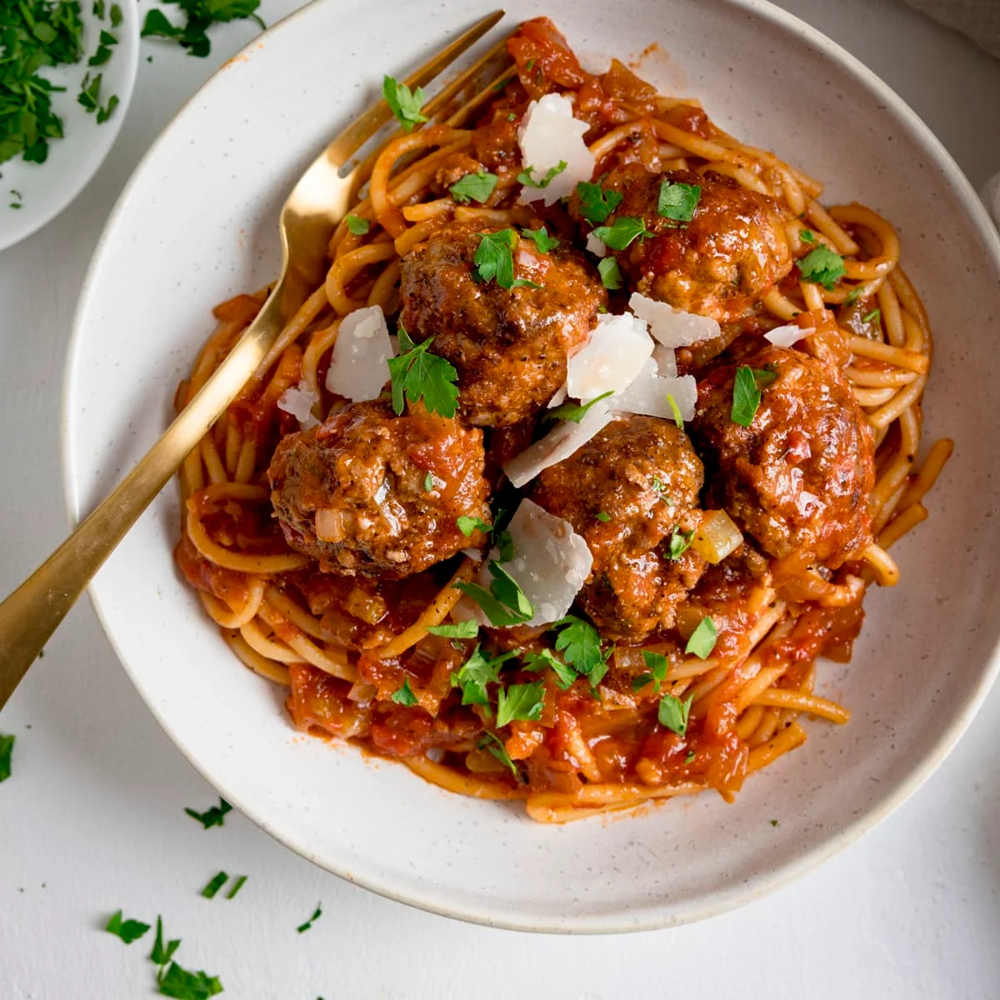

Meatball Recipe

Description
Savoury balls of beef and spice, paired with sumptuous strands of spaghetti
, topped in a rich tomato sauce
Ingredients
- Beef, 500g (20% fat)
- Eggs, 4
- Flour, 500g
- Olive oil, 2tsp
- Water, 2tsp
- Tomatoes, 2
- Onion, 1
- Chilli Flakes, 10g
Meatballs
- Add 500g beef to a mixing bowl
- Crack 2 eggs and add to beef
- Dice onion finely and add 100g to beef
- Mix by hand
- Split mixture into palm-size balls and rest at room temperature
Spaghetti
- Add 500g flour to worktop, gather to round shape and indent in middle
- Crack 2 eggs and add to flour's bowl
- Add 1tsp of Olive oil to mixture
- Mix by handle, adding 1tsp of water as needed
- Roll mixture flat with rolling pin
- Use knife to cut into thin strips
- Add to fridge for 30 minutes
- Boil in pot of water for 10 minutes
Tomato Sauce
- Dice tomatoes into fine mixture
- Add 1tsp of Olive oil
- Add 10g Chilli Flakes
- Blend until paste
- Add to saucepan and simmer for 10 minutes
- Sear Meatballs until browned
- Add meatballs to saucepan to finish for 10 minutes
Back